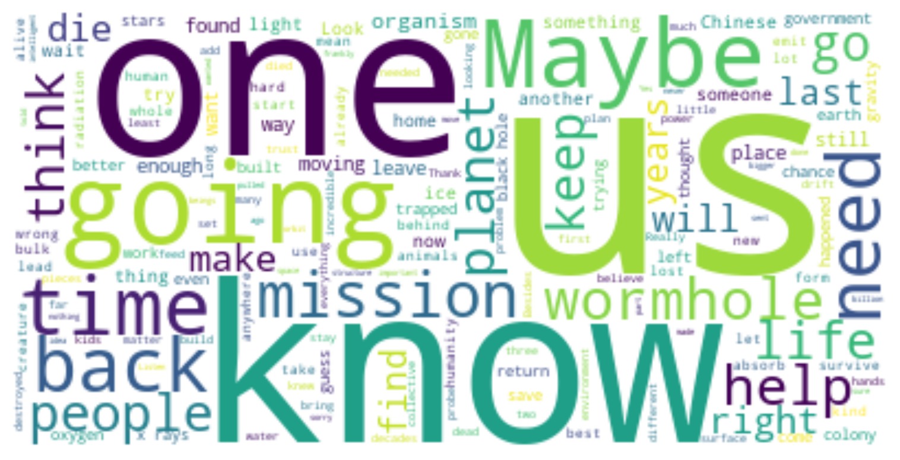
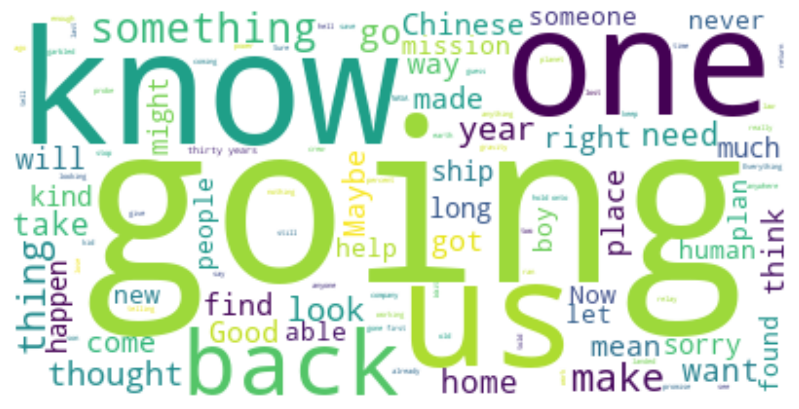
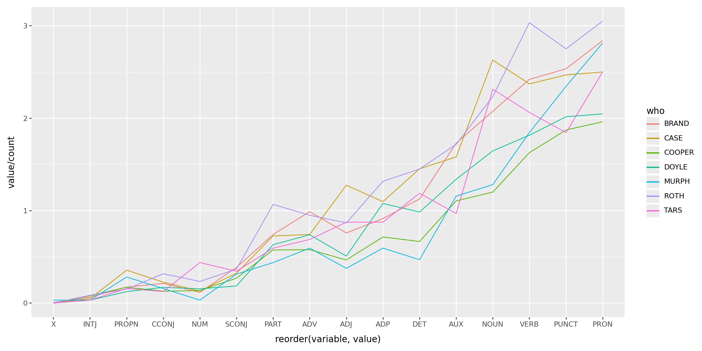

html_doc = """
<html>
<head>
<title>A simple example</title>
</head>
<body>
<h1>Hello, world!</h1>
<p class="first">This is a website.</p>
<p>It contains words.</p>
</body>
</html>
"""Working with text
Today
Getting data off the web: “scraping”.
Looking at the data: more working with words.
Scraping
Things to know
- Data access, data usage, and
robots.txt. - How a web page is structured.
- Getting a web page’s content into structured text.
Are you a robot?
The legality and ethics of “scraping the web” are beyond the scope of this course. Considerations:
- Read
<root url>/robots.txt. (example: imdb) - Do not spam the website! Use a timeout if making lots of requests.
- Use an API if it exists! (not this: OSM hit by bots, ignoring bulk download
- Respect copyright, data usage agreements, etcetera.
The structure of a web page: the Document Object Model
![image from https://en.wikipedia.org/wiki/Document_Object_Model showing a tree-like arrangement]](resources/DOM-model.png)
Here’s a web page:
Live view: resources/example.html
Draw the document tree!
Fun in your browser:
Go to uoregon.edu, and
- Change some text. (inspect -> click through to the text -> edit)
- Make something dissappear. (inspect -> add
display: none;to the element’s CSS) - Find the path through the document tree from the root (
html) to something. (inspect)
Doing this in python
We’ll use Beautiful Soup. Another option is lxml.html.
import bs4
soup = bs4.BeautifulSoup(html_doc, 'lxml')
print(soup.prettify())<html>
<head>
<title>
A simple example
</title>
</head>
<body>
<h1>
Hello, world!
</h1>
<p class="first">
This is a website.
</p>
<p>
It contains words.
</p>
</body>
</html>
Finding things:
For example all <p> tags:
soup.find_all("p")[<p class="first">This is a website.</p>, <p>It contains words.</p>]Other arguments narrow things down:
soup.find_all("p", class_="first")[<p class="first">This is a website.</p>]Or, using CSS selectors:
soup.select("p.first")[<p class="first">This is a website.</p>]Output:
Generally we want the text nested within certain tags. For instance:
for t in soup.body:
if t.name == "h1":
print("header", t.string)
elif t.name == "p":
print("paragraph:", t.string)header Hello, world!
paragraph: This is a website.
paragraph: It contains words.Now welcome to the real world
Real-world websites are a lot more complex. Let’s have a look at IMSDb.
import requests
session = requests.Session()
html_string = session.get("https://imsdb.com/Movie%20Scripts/Clueless%20Script.html")
doc = bs4.BeautifulSoup(html_string.content, 'lxml')
doc.title<title>Clueless Script at IMSDb.</title>Hands-on
Goals:
- Figure out what distinguishes the script from other parts of the web page.
- Figure out how to select those bits, in python.
- Separate out different bits of the script.
- Clean up the result.
Summarizing text
Next let’s look at the script to Interstellar, available in two files: a CSV file of per-line information and a text file with one “line” per line.
Setup
import json, re, collections
import pandas as pd
import numpy as np
import plotnine as p9
import wordcloud
import matplotlib.pyplot as plt
import spacy
nlp = spacy.load("en_core_web_sm")What information do we have?
info = pd.read_csv("data/interstellar_info.csv", index_col=0)
info| scene_num | what | who | directions | |
|---|---|---|---|---|
| 0 | 0 | direction | NaN | NaN |
| 1 | 0 | direction | NaN | NaN |
| 2 | 0 | direction | NaN | NaN |
| 3 | 0 | direction | NaN | NaN |
| 4 | 0 | direction | NaN | NaN |
| ... | ... | ... | ... | ... |
| 2457 | 491 | scene | NaN | NaN |
| 2458 | 492 | direction | NaN | NaN |
| 2459 | 492 | direction | NaN | NaN |
| 2460 | 492 | direction | NaN | NaN |
| 2461 | 492 | direction | NaN | NaN |
2462 rows × 4 columns
info['who'].value_counts()who
COOPER 305
BRAND 174
DOYLE 65
CASE 62
ROTH 60
MURPH 32
TARS 32
TOM 26
DONALD 20
ANSEN 14
ADMINISTRATOR 12
DOCTOR 11
LIU 10
PRINCIPAL 9
NSA AGENT 8
ASSISTANT 6
BRAND'S FATHER 5
BALLPLAYER 4
RIGGS 3
ROBOT 3
FARMER 3
EMILY COOPER 3
OLD ENGINEER 2
GOVERNMENT MAN 1
OLD MAN 1
ENGINEER ROBOT 1
CHINESE OFFICER 1
MURPH'S WIFE 1
WIFE 1
Name: count, dtype: int64Reading, and parsing, the lines
nlp = spacy.load("en_core_web_sm")
with open("data/interstellar_lines.txt", "r") as f:
lines = [nlp(l.strip()) for l in f.readlines()]
for l in lines[:3]:
print(l)SPACE.
But not the dark lonely corner of it we're used to. This is a glittering inferno -- the center of a distant galaxy.
Suddenly, something TEARS past at incredible speed: a NEUTRON STAR. It SMASHES headlong through everything it encounters... planets, stars. Can anything stop this juggernaut?Let’s make a word cloud
wc = wordcloud.WordCloud(
random_state=123,
background_color='white'
).generate(" ".join([l.text for l in lines]))Let’s make a word cloud, take 2
stopwords = set(wordcloud.STOPWORDS).union(["INT", "EXT"])
wc = wordcloud.WordCloud(
stopwords=stopwords,
random_state=123,
background_color='white'
).generate(" ".join([l.text for l in lines]))Let’s make a word cloud, take 3
characters = [s.title() for s in set(info['who']) if isinstance(s, str)]
wc = wordcloud.WordCloud(
stopwords=stopwords.union(characters),
random_state=123,
background_color='white'
).generate(" ".join([l.text for l in lines]))Wordclouds by character:
def make_wordcloud(who):
ut = info['who'] == who
t = " ".join([l.text for z, l in zip(ut, lines) if z])
wc = wordcloud.WordCloud(
stopwords=stopwords.union(characters),
random_state=123,
background_color='white'
).generate(t)
return wcWhat does Brand say?
plt.imshow(make_wordcloud("BRAND"), interpolation='bilinear')
plt.axis("off")
What does Cooper say?
It’s… interesting that she says “maybe” a lot more.
plt.imshow(make_wordcloud("COOPER"), interpolation='bilinear')
plt.axis("off")
Parts of speech: set-up
import collections
chs = pd.DataFrame(info['who'].value_counts())
total = collections.Counter([t.pos_ for l in lines for t in l])
totalCounter({'NOUN': 6822,
'PUNCT': 6141,
'VERB': 5239,
'ADP': 3977,
'PRON': 3943,
'DET': 3936,
'PROPN': 2327,
'AUX': 1958,
'ADJ': 1933,
'ADV': 1714,
'PART': 1034,
'CCONJ': 651,
'SCONJ': 518,
'NUM': 260,
'INTJ': 59,
'X': 2})Parts of speech: counting
for n in total:
chs[n] = 0
for who in chs.index:
ut = info['who'] == who
c = collections.Counter([t.pos_ for z, l in zip(ut, lines) for t in l if z])
for n in c:
chs.loc[who, n] = c[n]
chs.head()| count | PROPN | PUNCT | CCONJ | PART | DET | ADJ | NOUN | ADP | PRON | AUX | VERB | ADV | INTJ | SCONJ | NUM | X | |
|---|---|---|---|---|---|---|---|---|---|---|---|---|---|---|---|---|---|
| who | |||||||||||||||||
| COOPER | 305 | 52 | 571 | 39 | 175 | 203 | 142 | 366 | 218 | 598 | 337 | 496 | 176 | 24 | 82 | 41 | 0 |
| BRAND | 174 | 30 | 441 | 37 | 129 | 196 | 132 | 361 | 159 | 494 | 301 | 421 | 172 | 11 | 67 | 20 | 1 |
| DOYLE | 65 | 8 | 131 | 11 | 41 | 64 | 33 | 107 | 70 | 133 | 87 | 118 | 48 | 2 | 12 | 10 | 0 |
| CASE | 62 | 22 | 153 | 14 | 45 | 90 | 79 | 163 | 68 | 155 | 98 | 147 | 46 | 3 | 20 | 8 | 0 |
| ROTH | 60 | 9 | 165 | 19 | 64 | 87 | 52 | 134 | 79 | 183 | 103 | 182 | 57 | 5 | 22 | 14 | 0 |
Parts of speech: plotting
(
chs
.query("count > 30")
.melt(id_vars=['count'], ignore_index=False)
.reset_index()
>>
p9.ggplot(p9.aes(x='reorder(variable, value)', y='value/count', color='who', group='who'))
+ p9.geom_line()
) + p9.theme(figure_size=(12,6))
The Bechdel test?
Challenge: Does Interstellar pass the Bechdel test?